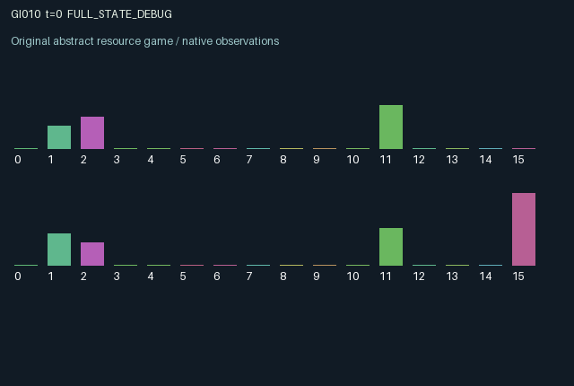

GI010 / LEGACY_ARRAY
astra-d2-00010: bilateral credit with aged obligations and productive sanctions
2 agents5 actions16 observation columns32 original horizonRuntime: PASS
Release verification episode
Untrained uniform legal actions. Actual JAX state sampled along the full original episode; full-state debug camera. No human performance or learning claim.

Run this game
crucibles play --game 10
Start Python locally, then open the address printed by the terminal. Installation, multiplayer, takeover and keyboard controls →
Objective, rewards & ending
Exact task contract
{
"objective": "Accumulate original per-agent rewards under the interaction rules in mechanism.md.",
"natural_termination": "No early terminal; original t >= 32 horizon.",
"exact_transition_and_reward_source": "def raw_step(self, key, state, actions):\n repaid = jnp.where(\n actions == 3,\n jnp.minimum(state[\"balance\"], state[\"debt\"]),\n 0.0,\n )\n lendable = (\n (actions == 2)\n & (jnp.roll(state[\"request\"], 1) > 0)\n & (jnp.roll(state[\"debt\"], 1) <= 0.000001)\n )\n lent = jnp.where(\n lendable,\n jnp.minimum(state[\"balance\"] - repaid, 0.55),\n 0.0,\n )\n borrowed = jnp.roll(lent, 1)\n returned = jnp.roll(repaid, 1)\n transfer = returned - repaid + borrowed - lent\n working_balance = jnp.clip(state[\"balance\"] + transfer, 0.0, 3.0)\n debt = jnp.maximum(state[\"debt\"] - repaid, 0.0) + 1.1 * borrowed\n age = jnp.where(\n debt > 0.000001,\n jnp.where(borrowed > 0.0, 0, state[\"age\"] + 1),\n 0,\n ).astype(jnp.int32)\n enforced = (\n (actions == 4)\n & (jnp.roll(debt, 1) > 0.000001)\n & (jnp.roll(state[\"age\"], 1) >= 4)\n )\n frozen = jnp.maximum(state[\"frozen\"] - 1, 0)\n frozen = jnp.where(jnp.roll(enforced, 1), 3, frozen)\n frozen = jnp.where(debt > 0.000001, frozen, 0).astype(jnp.int32)\n income = (\n state[\"skill\"] * jnp.sqrt(working_balance)\n * (frozen == 0).astype(jnp.float32)\n )\n balance = jnp.clip(working_balance + 0.5 * income, 0.0, 3.0)\n request = jnp.where(\n actions == 1,\n 3,\n jnp.maximum(state[\"request\"] - 1, 0),\n )\n request = jnp.where(borrowed > 0.0, 0, request).astype(jnp.int32)\n rewards = (\n income / 0.14\n - 0.05 * enforced.astype(jnp.float32)\n - 0.01 * (actions == 1).astype(jnp.float32)\n ).astype(jnp.float32)\n next_state = {\n \"t\": state[\"t\"] + jnp.array(1, dtype=jnp.int32),\n \"balance\": balance.astype(jnp.float32),\n \"debt\": debt.astype(jnp.float32),\n \"age\": age,\n \"request\": request,\n \"frozen\": frozen,\n \"skill\": state[\"skill\"],\n \"last_income\": income.astype(jnp.float32),\n \"last_transfer\": transfer.astype(jnp.float32),\n \"last_enforce\": enforced.astype(jnp.float32),\n }\n done_all = next_state[\"t\"] >= 32\n dones = jnp.full((2,), done_all, dtype=jnp.bool_)\n info = {\"done_all\": done_all, \"legal_mask\": self.legal_actions(next_state)}\n return self.observe(next_state), next_state, rewards, dones, info"
}Declared per-step reward bounds: -1.0 to 1.0. Observability: source_defined.
Rules
Original mechanism document (historical status wording retained)
# astra-d2-00010: bilateral credit with aged obligations and productive sanctions This is an original, parentless source proposal. It has not been executed or validated by the author. It intentionally relates to generic lending, repeated trust, and costly enforcement. It is a small abstract mechanism rather than a financial model; no novelty theorem, nonisomorphism, eligibility, compiler result, or learning advantage is asserted. ## Persistent causal structure Each agent has a cash balance, privately known productive skill, debt owed to the other agent, a debt age, an expiring credit request, and a temporary production freeze. Both agents can simultaneously occupy borrower and lender roles. Actions are 0 wait, 1 request credit, 2 lend, 3 repay, and 4 enforce. A request lasts three future opportunities unless renewed or funded. Lending checks the other agent's pre-step request and pre-step debt: it transfers up to 0.55 of the lender's available cash only when the recipient has a live request and effectively no existing debt. The recipient then owes 110 percent of the amount borrowed. Requests created in the same call cannot be funded immediately. Repayment transfers as much as possible toward the existing obligation, so it can be partial. After transfers, an enforcement action can freeze an unpaid debtor whose pre-step debt age is at least four. A successful sanction sets the debtor's production-freeze clock to three; further enforcement renews it. Full repayment in that call clears the freeze and prevents enforcement against the cleared obligation. A new loan starts its age at zero. Production is privately determined skill times the square root of post-transfer cash when the updated freeze clock is zero. Half of production is added to cash. Cash capacity is three; overflow is discarded. There is no terminal wealth or unpaid-debt settlement reward. These choices make repayment and enforcement relevant through future productive opportunities rather than through an imposed terminal success label. ## Information and incentives Balances, obligations, obligation ages, request clocks, and freeze clocks are public. An agent sees its own skill, last income, and net transfer but does not directly observe the other agent's skill or income. Public balance movements may permit partial inference over time. Reward is current production divided by 0.14, minus 0.05 for effective enforcement and 0.01 for requesting credit. Production is bounded by 0.07 times sqrt(3), so rewards lie within [-0.05, 0.867]. Lending and repayment have no direct reward: they change both agents' cash, future production, and enforceable obligations. All five actions are legal; an ineffective lend, repayment, or enforcement produces no corresponding transfer or enforcement cost. ## Observation columns 0 elapsed time / 32; 1 own cash / 3; 2 other cash / 3; 3 own debt / 0.61; 4 debt owed by other / 0.61; 5 own debt age / 32; 6 other debt age / 32; 7 own request clock / 3; 8 other request clock / 3; 9 own freeze clock / 3; 10 other freeze clock / 3; 11 own private skill / 0.07; 12 own last income / 0.14; 13 own last net transfer / 0.61; 14 other last effective-enforcement indicator; 15 agent index. ## Scope and possible failure modes The finite horizon, absence of terminal settlement, and private productive capacity can make default, refusal to lend, or ineffective repeated sanctions rational. Positive credit activity is not required for the proposal to be retained. Both directions of lending and enforcement alter persistent bilateral state. Terminal balances and obligations remain present for inspection. Trusted validation remains outstanding.
Commands
0Wait
1Request credit
2Lend to requesting partner
3Repay debt
4Enforce aged partner debt
Roles & abilities
agent_0 Original legacy agent; see mechanism and source
agent_1 Original legacy agent; see mechanism and source
Observation permissions
Training receives only the original observation rows. Role cameras use declared visibility; debug cameras are explicitly marked. Local benchmark records log debug exposure and role takeover history.
Exact observation layout
[
{
"slice": [
0,
16
],
"visibility": "exact original observe() below",
"source_code": "def observe(self, state):\n obs = jnp.zeros((2, 16), dtype=jnp.float32)\n obs = obs.at[:, 0].set(state[\"t\"].astype(jnp.float32) / 32.0)\n obs = obs.at[:, 1].set(state[\"balance\"] / 3.0)\n obs = obs.at[:, 2].set(jnp.roll(state[\"balance\"], 1) / 3.0)\n obs = obs.at[:, 3].set(state[\"debt\"] / 0.61)\n obs = obs.at[:, 4].set(jnp.roll(state[\"debt\"], 1) / 0.61)\n obs = obs.at[:, 5].set(state[\"age\"].astype(jnp.float32) / 32.0)\n obs = obs.at[:, 6].set(jnp.roll(state[\"age\"], 1).astype(jnp.float32) / 32.0)\n obs = obs.at[:, 7].set(state[\"request\"].astype(jnp.float32) / 3.0)\n obs = obs.at[:, 8].set(jnp.roll(state[\"request\"], 1).astype(jnp.float32) / 3.0)\n obs = obs.at[:, 9].set(state[\"frozen\"].astype(jnp.float32) / 3.0)\n obs = obs.at[:, 10].set(jnp.roll(state[\"frozen\"], 1).astype(jnp.float32) / 3.0)\n obs = obs.at[:, 11].set(state[\"skill\"] / 0.07)\n obs = obs.at[:, 12].set(state[\"last_income\"] / 0.14)\n obs = obs.at[:, 13].set(state[\"last_transfer\"] / 0.61)\n obs = obs.at[:, 14].set(jnp.roll(state[\"last_enforce\"], 1))\n obs = obs.at[:, 15].set(jnp.arange(2, dtype=jnp.float32))\n return obs"
}
]Entity visibility & attributes
[]
Actual verification & provenance
Per-game execution receipt
{
"game": "gi010",
"status": "PASS",
"verification_revision": 2,
"source_sha256": "b41432ade69931c4cea99adc9d47298727da761f11cafd559ab673fe4f64ae27",
"seed": 20261101,
"runtime": {
"jax": "0.4.38",
"numpy": "1.26.4",
"devices": [
"TFRT_CPU_0"
]
},
"dimensions": {
"num_agents": 2,
"observation_size": 16,
"num_actions": 5,
"max_steps": 32
},
"checks": {
"eager_reset": {
"status": "PASS",
"seconds": 0.5425703525543213
},
"observation_spaces_legal_masks": {
"status": "PASS",
"seconds": 0.13288521766662598
},
"eager_step": {
"status": "PASS",
"seconds": 0.863487958908081
},
"jit_reset": {
"status": "PASS",
"seconds": 0.3929417133331299
},
"jit_step": {
"status": "PASS",
"seconds": 0.31156277656555176
},
"eager_jit_integer_parity_float_measurement": {
"status": "PASS",
"seconds": 0.0
},
"jit_vmap_reset": {
"status": "PASS",
"seconds": 0.5371828079223633
},
"jit_vmap_step": {
"status": "PASS",
"seconds": 0.28928637504577637
},
"outer_autoreset_api": {
"status": "PASS",
"seconds": 0.5447266101837158
},
"full_original_horizon_episode_and_render": {
"status": "PASS",
"seconds": 1.228691577911377
}
},
"human_scores": null,
"browser_controls": "PENDING",
"failures": [],
"elapsed_seconds": 5.428601980209351,
"float_parity_max_abs": 2.9802322387695312e-08,
"numerical_parity": "UNDETERMINED_NONZERO_FLOAT_DIFFERENCE",
"raw_terminal_absorbing": "NOT_PART_OF_ORIGINAL_LEGACY_CONTRACT",
"terminal_outer_reset": "PASS",
"episode_steps": 32,
"scripted_random_returns": [
10.527142331004143,
10.941475629806519
],
"terminal": true,
"demo_information": "FULL_STATE_DEBUG",
"demo_frames": 33,
"render_roles_checked": 2
}Chromium control verification
{
"game": "gi010",
"status": "PASS",
"human_scores": null,
"engineering": true,
"checks": [
"catalog_selected_and_real_native_reset",
"dom_queue_and_native_step",
"second_participant_ownership_and_native_joint_step",
"all_roles_individually_controllable_no_role_cap",
"explicit_debug_camera",
"release_to_pure_ai_without_reset"
],
"ui_sha256": "15b5861d23b3c42811865c954d5a988280bbfd21cf8e93754be2437a027158c5",
"seconds": 5.4695212841033936
}Original identity and file hashes
{
"id": 10,
"key": "gi010",
"title": "astra-d2-00010: bilateral credit with aged obligations and productive sanctions",
"summary": "",
"tags": [],
"family": "legacy_array",
"dimensions": {
"num_agents": 2,
"observation_size": 16,
"num_actions": 5,
"max_steps": 32
},
"source_sha256": "b41432ade69931c4cea99adc9d47298727da761f11cafd559ab673fe4f64ae27",
"manifest_sha256": "7546b193902cb8c4407cbbef600d0a447210b9cb9d51bc62704ec73bd8474c38",
"files": [
{
"file": "candidate.py",
"sha256": "b41432ade69931c4cea99adc9d47298727da761f11cafd559ab673fe4f64ae27",
"bytes": 4845,
"origin": "work/exp_2/astra_generation/discovery_v2/initial/candidate_00010/attempt_00/candidate.py"
},
{
"file": "mechanism.md",
"sha256": "95903ffa1c16610871f2aa397ab78d813c2f8eda72aed9045d4dab4f9a8a1a9c",
"bytes": 3679,
"origin": "work/exp_2/astra_generation/discovery_v2/initial/candidate_00010/attempt_00/mechanism.md"
}
],
"original_status": "LEGACY_SOURCE",
"original_saved_replay": false,
"release_validation": "PASS",
"human_scores": null,
"browser_validation": "PASS"
}